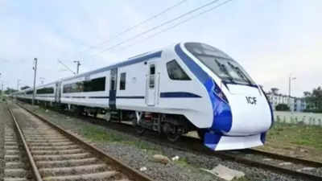

Indian Railways to introduce 750 new Vande Bharat trains in next three years
Indian Railways is set to introduce 750 new Vande Bharat trains in the next
three years, as part of its plan to modernize its fleet and provide passengers
with a more comfortable and faster travel experience. The new trains will be
manufactured at Integral Coach Factory (ICF) in Chennai and will be
equipped with a host of modern amenities, including air-conditioned
coaches, Wi-Fi connectivity, and infotainment systems.

Indian Railways to start manufacturing Talgo-type lightweight coaches
Indian Railways is set to start manufacturing Talgo-type lightweight
coaches, which are expected to reduce travel time by up to 20%. The
coaches will be manufactured at ICF in Chennai and will be deployed on
high-speed routes. The new coaches will be lighter than the existing ones,
which will help reduce fuel consumption and improve speed.
Indian Railways to introduce new freight trains for faster delivery
of goods Indian Railways is set to introduce new freight trains that
will be able to deliver goods faster and more efficiently. The new
trains will be equipped with modern technology, such as GPS tracking
and automatic braking systems, which will help to improve safety and
reduce delays. The new trains will also be able to carry heavier
loads, which will help to reduce the number of trains needed to
transport goods.